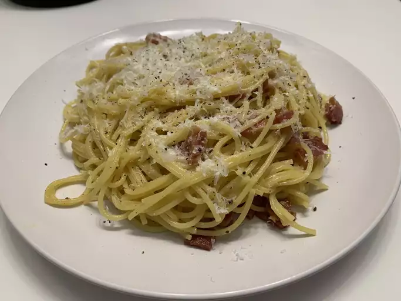

Carbonara

How to prepare Carbonara
Delicious meal in a few easy steps
Ingredients
- Oil
- Guanciale
- Spaghetti
- Eggs
- Cheese
- Seasonings
Steps
-
Cook the pork in olive oil until browned and crispy, then drain on paper
towels.
-
Boil the spaghetti in salted water. Drain and return to the pot. Let
cool.
-
Whisk the eggs, 1/2 of the cheese, and some pepper in a bowl until
smooth.
-
Pour the egg mixture over the pasta, stirring quickly, until creamy.
-
Stir in the pork, then top with the remaining cheese and more black
pepper.